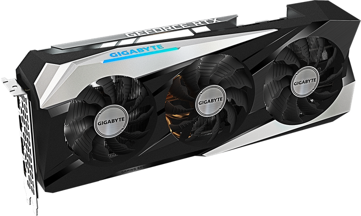
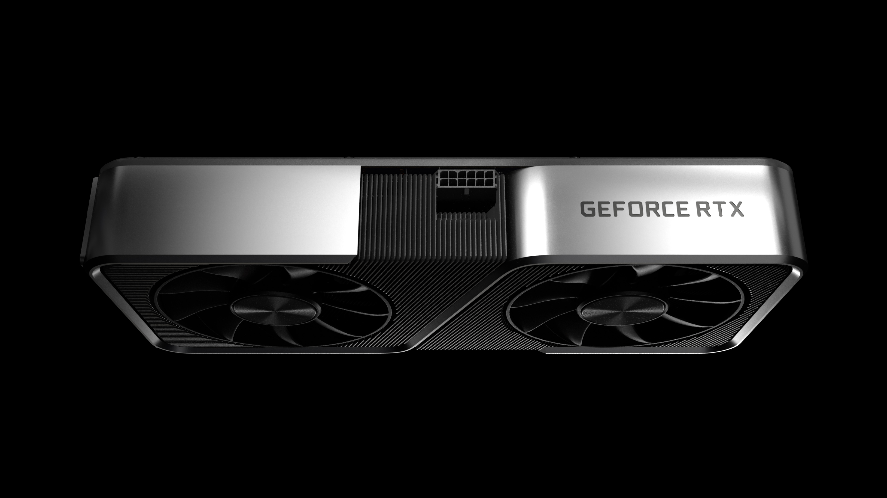

6144 ядер
RTX 3070 Ti має 6144 CUDA-ядер. Це на 256 більше, ніж у RTX 3070.
Відеокарта, яка свого часу була майже мрією для 1440p-геймінгу.
RTX 3070 Ti з'явилася в той момент, коли серія RTX 30 вже встигла добре зарекомендувати себе. NVIDIA взяла RTX 3070 і зробила її швидшою: додала більше CUDA-ядер та перейшла на GDDR6X.
На папері це може виглядати просто як «3070, але трохи швидша». Насправді саме поєднання 256-бітної шини, GDDR6X, 6144 CUDA-ядер і архітектури Ampere зробило карту дуже цікавим варіантом.
Сьогодні вона вже не є новою моделлю, але саме тому RTX 3070 Ti цікаво порівнювати не тільки з RTX 3070, а й з картами наступних поколінь.

Ось цифри, за якими можна зрозуміти характер цієї відеокарти.
Обчислювальні ядра GPU
Відеопам'ять
Заявлена Boost-частота
Шина пам'яті
Референсне споживання
Рекомендована потужність БЖ
NVIDIA для референсної RTX 3070 Ti вказує Graphics Card Power на рівні 290 Вт.
Це значення стосується самої відеокарти, а не всього комп'ютера. Процесор, материнська плата, SSD, вентилятори та інші компоненти теж споживають електроенергію.
Саме тому NVIDIA рекомендує системний блок живлення потужністю 750 Вт для референсної конфігурації.
Якщо карта безперервно споживає 290 Вт.
Те саме навантаження протягом п'яти годин.
Математичний максимум для 290 Вт постійного навантаження.
У реальній грі споживання не обов'язково буде постійно 290 Вт. Конкретні моделі виробників також можуть мати інші значення.
RTX 3070 Ti випускалася не тільки у виконанні NVIDIA. Партнери робили власні версії з різними кулерами, дизайном, частотами та налаштуваннями живлення.
Founders Edition та сам графічний процесор.
Власні системи охолодження та серії ROG і TUF.
Серії Gaming X Trio, SUPRIM та інші моделі.
Gaming OC та інші версії з власним дизайном.
Компактні та великі тривентиляторні моделі.
Власні модифікації та системи охолодження.
Також випускала власні карти GeForce.
Власні версії RTX 3070 Ti для різних ринків.
RTX 3070 стала основою для RTX 3070 Ti. Вона має 5888 CUDA-ядер, 8 ГБ GDDR6 та Boost Clock 1.73 GHz.
RTX 3070 Ti підняла кількість CUDA-ядер до 6144 і перейшла на GDDR6X.

Тут цікаво не просто подивитися на цифри. Подивися, як за кілька поколінь змінилися архітектура, пам'ять і технології.
| Відеокарта | Покоління | CUDA | Пам'ять | Шина | Boost |
|---|---|---|---|---|---|
| GTX 1660 Super | Turing | 1408 | 6 GB GDDR6 | 192-bit | 1.785 GHz |
| RTX 2060 | Turing | 1920 | 6 GB GDDR6 | 192-bit | 1.68 GHz |
| RTX 3060 | Ampere | 3584 | 12 GB GDDR6 | 192-bit | 1.78 GHz |
| RTX 3070 | Ampere | 5888 | 8 GB GDDR6 | 256-bit | 1.73 GHz |
| RTX 3070 Ti | Ampere | 6144 | 8 GB GDDR6X | 256-bit | 1.77 GHz |
| RTX 4060 Ti | Ada Lovelace | 4352 | 8/16 GB GDDR6 | 128-bit | 2.54 GHz |
| RTX 4070 | Ada Lovelace | 5888 | 12 GB GDDR6X | 192-bit | 2.48 GHz |
| RTX 5060 | Blackwell | 3840 | 8 GB GDDR7 | 128-bit | 2.50 GHz |
| RTX 5070 | Blackwell | 6144 | 12 GB GDDR7 | 192-bit | 2.51 GHz |
| RTX 5080 | Blackwell | 10752 | 16 GB GDDR7 | 256-bit | 2.62 GHz |
Ніякого Ray Tracing у вигляді апаратних RT-ядер. Значно менше CUDA-ядер і лише 6 ГБ відеопам'яті. Але для свого класу карта свого часу була дуже популярною.
6144 CUDA-ядер, GDDR6X, 256-бітна шина та друге покоління RT-ядер. Саме тут починається серйозний RTX-досвід.
6144 CUDA-ядер, але вже архітектура Blackwell, 12 ГБ GDDR7, DLSS 4 та четверте покоління RT-ядер.
10752 CUDA-ядер, 16 ГБ GDDR7 і 256-бітна шина. Це вже зовсім інша категорія продуктивності.
Не проблема. Натискай на картку — і сайт пояснить технологію нормальною мовою.
RTX 3070 Ti має 6144 CUDA-ядер. Це на 256 більше, ніж у RTX 3070.
RTX 3070 Ti отримала GDDR6X замість GDDR6, яку використовує RTX 3070.
Це досить серйозне навантаження для відеокарти, особливо якщо карта працює довго під повним навантаженням.
RTX 3070 Ti має значно ширшу шину пам'яті, ніж багато сучасних карт середнього класу.
Це друге покоління RTX для настільних відеокарт NVIDIA.
Об'єм відеопам'яті становить 8 ГБ. Але важливий не тільки об'єм — має значення і тип, і ширина шини.
RTX 3070 Ti підтримує DLSS, який може допомагати отримувати більше FPS у підтримуваних іграх.
NVIDIA вказує підтримку до чотирьох незалежних дисплеїв.
Максимальна цифрова роздільна здатність у специфікації NVIDIA — 7680 × 4320.
Відеокарта має апаратний енкодер NVIDIA, що корисно для запису та трансляції відео.
RTX 3070 Ti підтримує NVIDIA Reflex, технологію для зменшення системної затримки у підтримуваних іграх.
Кількість CUDA-ядер сама по собі не визначає FPS. Архітектура, пам'ять, кеш та інші фактори теж мають значення.
Тому що вона знаходиться у дуже цікавій точці історії NVIDIA.
З одного боку — це вже не нова карта. Після Ampere з'явилися Ada Lovelace і Blackwell.
З іншого боку — RTX 3070 Ti досі має характеристики, які виглядають серйозно: 6144 CUDA-ядер, GDDR6X і 256-бітну шину.
А якщо порівнювати її з сучасними моделями, стає добре видно, наскільки сильно за кілька років змінилися архітектури, пам'ять та AI-технології.
RTX 3070 Ti — хороший приклад того, як виглядала потужна ігрова відеокарта покоління Ampere.
Її 6144 CUDA-ядер, 8 ГБ GDDR6X, 256-бітна шина та RT/Tensor Cores показують, наскільки далеко NVIDIA вже зайшла на момент виходу RTX 30.
Пояснення